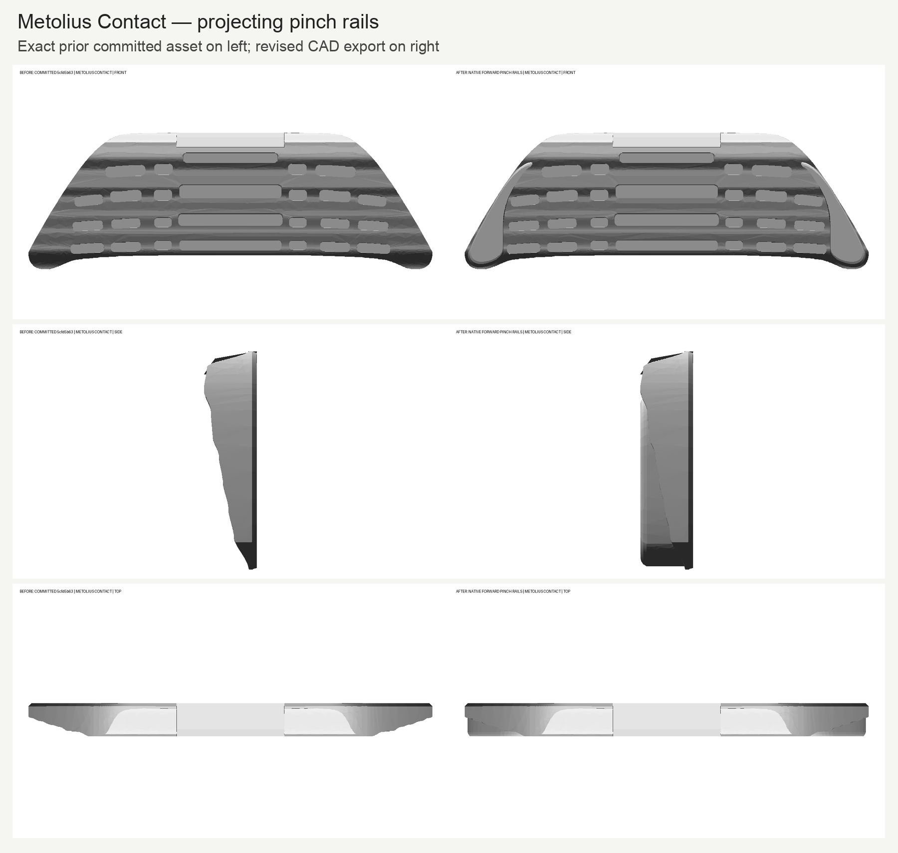
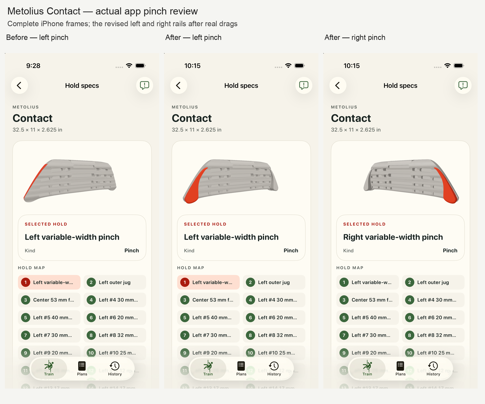
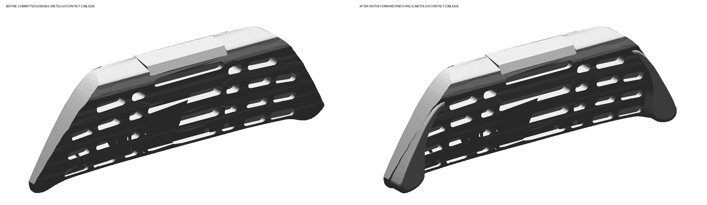

Both pinch rails now project forward with opposing exposed gripping surfaces. The native highlights follow each rail. Asher accepted the shown pinch rails and highlights with “Y” on 2026-10-01. Display estimates and the technical limits below still apply.

5cfd5b6386b283b2eb8daefc054a42823fdf852b.

All 33 contact facts, 31 non-pinch native contact constructions and the published envelope/depth checks are preserved. Rail projection, widths, profile curves, section scales and rounding are display estimates. Five local sections per side verify opposing surfaces; they do not establish manufacturer dimensions or hand clearance.
Fresh native and independent export checks passed. Two compiler runs produced identical model bytes. Full tests: 1,278 iOS passed, three skipped; 706 Python passed, ten skipped. All 64 installed Apple packages and canonical Android staging match current source. The isolated simulator and build/test resources were removed and deletion verified.
Detailed review · Native construction and evidence · Independent technical review · Runtime validation · Package provenance · Retained raw evidence
Complete manufacturer photograph · Complete manufacturer numbered diagram · Manufacturer product page
Accepted with “Y” on 2026-10-01. Human review record.